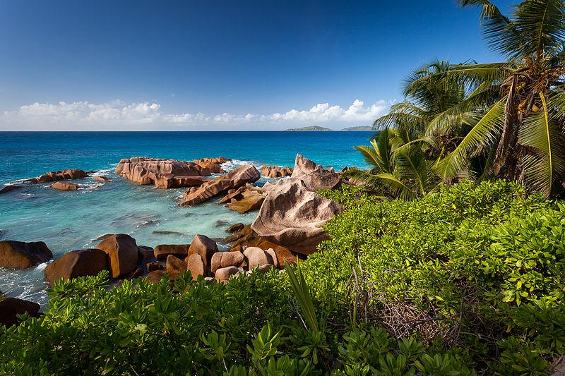
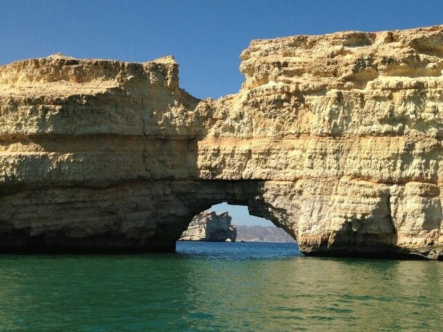
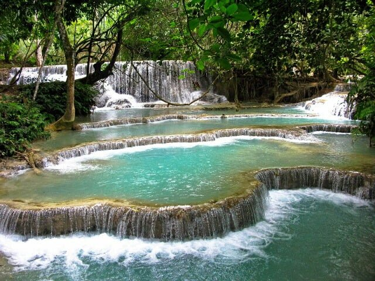

Uyuni
Deserto do Atacama
Ilhas Galápagos
Krabi
Huaraz
Destinos para família

Ilhas Galápagos
Comprar
Com aproximadamente 25 mil habitantes e muitos turistas, esta ilha é um dos lugares incríveis para
viajar.
Os cruzeiros pela ilha, animais locais e a natureza fazem o passeio ser inesquecível.

Krabi
Comprar
Krabi, uma província da Tailândia, é composta por 130 ilhas, e é muito buscada por quem deseja encontrar
um local sem muita agitação.
Os mares transparentes e as paisagens são de tirar o fôlego.

Roatán
Comprar
A ilha de Roatán, localizada no litoral norte de Honduras, não é um dos mais comentados destinos do
Caribe.
Ainda assim, suas águas quentes e cristalinas trazem para região uma paisagem paradisíaca.

Bonito
Comprar
Localizada no Mato Grosso do Sul, Bonito é um dos lugares incríveis ao redor do mundo para viajar.
Com suas cachoeiras, rios de águas cristalinas e cavernas, a cidade ganha muitas visitas o ano todo.

Seychelles
Comprar
Seychelles, na África, é um país localizado no Oceano Índico. Seu território conta com 115 ilhas com
praias de areia clara e águas extremamente transparentes.
É uma região de paisagem única, por isso os moradores e nativos promovem o turismo sustentável.
Destinos para casais

Calcutá
Comprar
Calcutá é uma cidade da Índia popularmente conhecida pelas décadas de trabalho que Madre Teresa dedicou
à população da região.
Suas construções fazem de Calcutá um destino certeiro para quem busca lugares incríveis para viajar.

Muscat
Comprar
Muscat, em Omã, é uma cidade rodeada por montanhas e banhada pelo Oceano Índico.
A capital e maior cidade de Omã reúne em sua beleza natural tanto montanhas quanto dunas e praias.

Luang Prabang
Comprar
Luang Prabang, localizada em Laos, na Ásia, é um vilarejo de ares franceses em meio às montanhas.
É banhada por dois rios e guarda em seu território uma das mais belas cachoeiras de todo o mundo.

Torres del Paine
Comprar
Localizada no Sul da Patagônia, além de ser um dos lugares incríveis para viajar, Torres del Paine faz
parte de uma reserva ambiental declarada pela Unesco.
Essa área possui muitos animais exóticos, geleiras, campos e lagos para atividades de ecoturismo.
Aparados da Serra
Comprar
Entre Santa Catarina e Rio Grande do Sul, o Parque Nacional de Aparados da Serra é formado por cânions,
cachoeiras e muita natureza para apreciar e praticar esportes radicais.
Destino para grupos de amigos
Lago Powell
Comprar
Localizado entre Utah e Arizona, o lago Powell é um reservatório do rio Colorado,
situado em uma região semiárida. Todo ano recebe diversos turistas, devido a sua água intensamente azul
e a paisagem local.
Yogyakarta
Comprar
Yogyakarta é uma cidade localizada na ilha de Java, na Indonésia. Embora seja uma região bastante
movimentada,
em uma viagem para Yogyakarta você vai poder a conhecer paisagens montanhosas maravilhosas, o vulcão do
monte Merapi e muitos templos budistas e hindus.
Machu Picchu
Comprar
Machu Picchu é um desses lugares em que é preciso desfrutar ao menos uma vez na vida.
A energia inexplicável do local e a bela paisagem que cerca essa Maravilha do Mundo Moderno atraem
muitos viajantes durante todo o ano.

Angkor Wat
Comprar
Descoberta no final do século 16, a capital do antigo império Jemer é considerada a maior estrutura religiosa do mundo.

Taj Mahal
Comprar
Não deixe de ir até a margem oposta ao rio Yamuna, onde você poderá contemplar uma perspectiva totalmente diferente da vista do Taj Mahal.
No entardecer, as luzes do pôr do sol dão um aspecto incrivelmente bonito ao mausoléu.